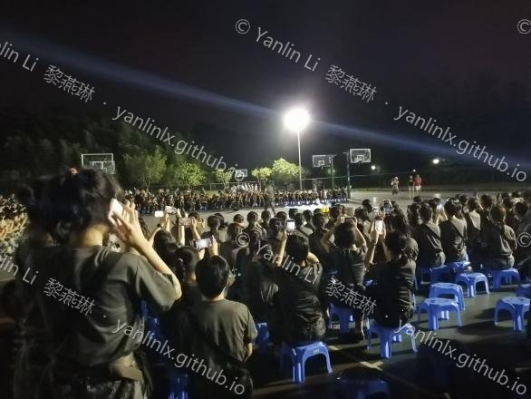
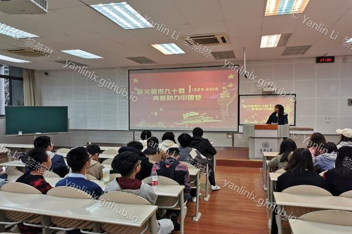
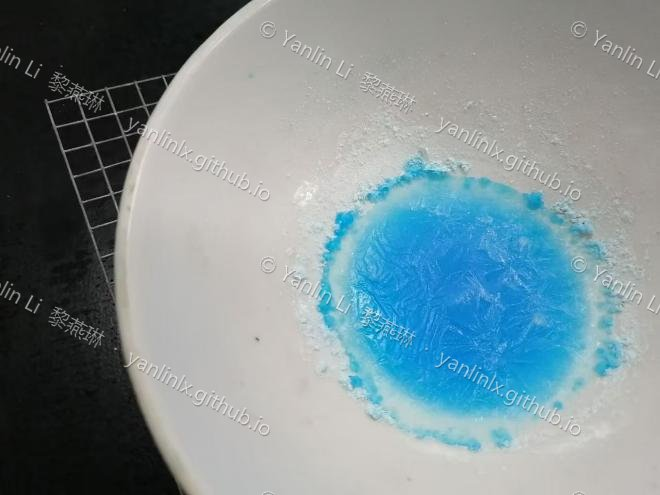
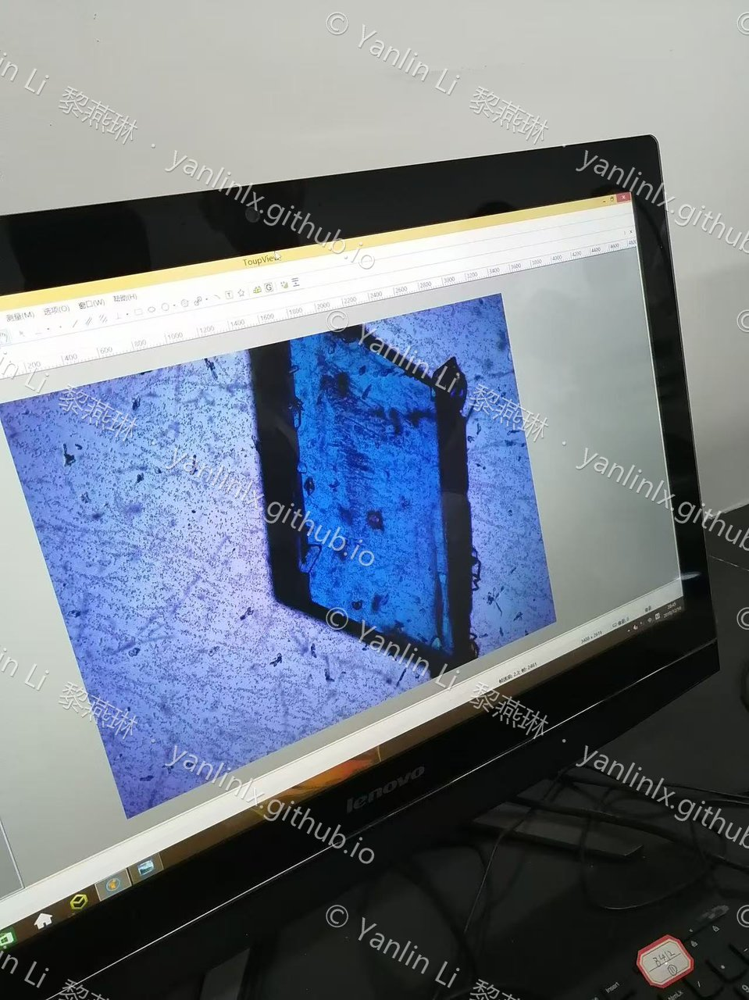
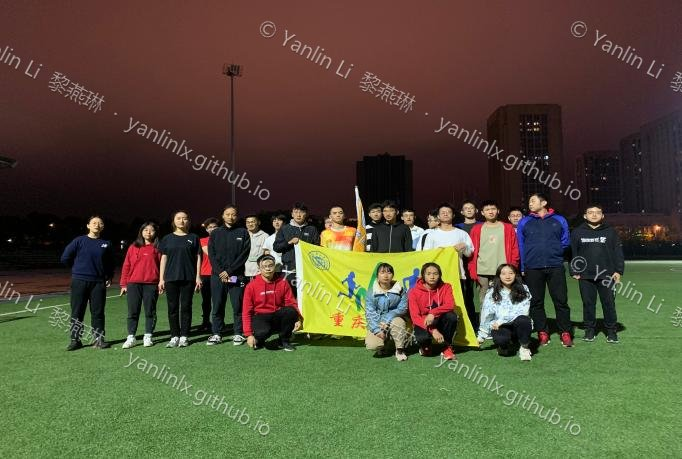
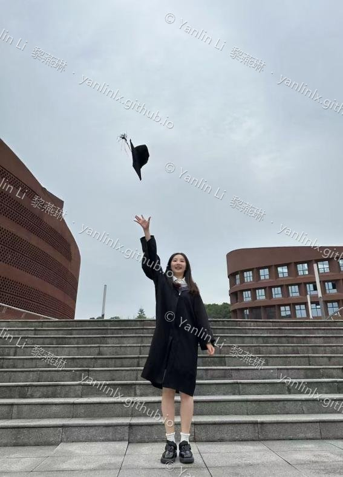
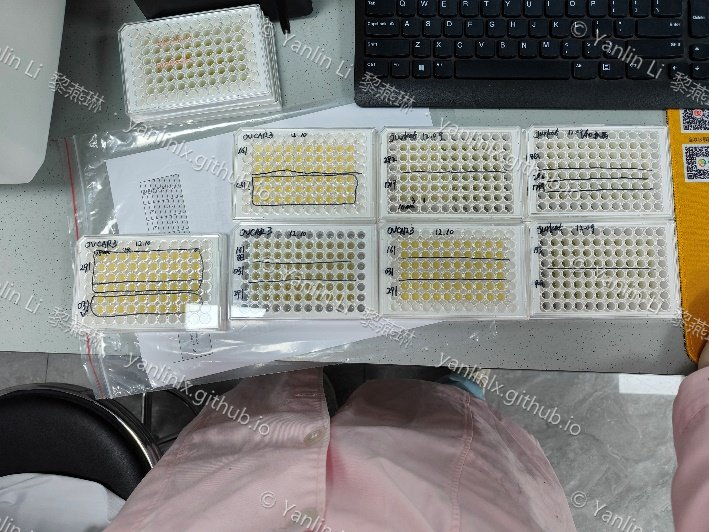
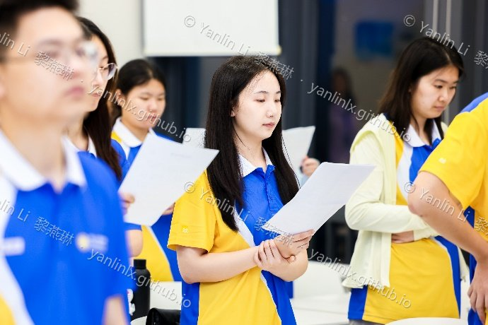
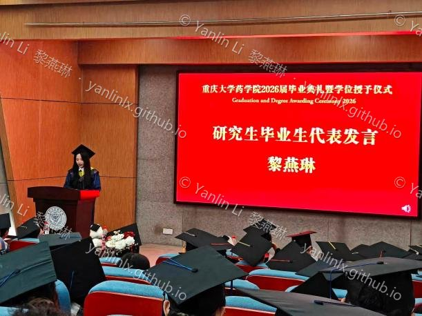
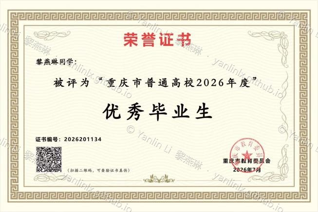

My Journey
- 2019.09
University begins
- I thought I'd finally escaped the endless classes and exams everyone promised would end once I got to college. And of course, the very first lesson was military training!

- 2019.11
Elected class secretary
- As an introvert, I decided to push myself and run for class secretary. And I actually won! 😀

- 2019.11
First chemistry labs
- Started doing chemistry labs. Organic synthesis got pretty boring later on, but the copper sulfate crystals and orange-essential-oil extraction are moments I'll never forget.


- 2020.01
Marathon club
- Joined the marathon club — I even planned to run a half marathon! It never happened, derailed by the pandemic and the rush of graduation. I also became the club's vice president 😀. I've started training again lately, so maybe I'll actually run that half marathon one day.

- 2020.03
Online classes, pandemic era
- Started the semester under the pandemic — online classes are something only Chinese students can truly relate to.
- 2020.10
First taste of research
- Joined Professor Xue's lab and got my first real taste of research!
- 2023.06
Bachelor's graduation
- Graduated with my bachelor's! The on-and-off pandemic and research had settled my life back into something calm.

- 2023.09
Master's begins
- Started my master's. To qualify for a company internship in year two, I worked hard and finished my first project during year one — while still taking classes.
- 2024.09
Beijing · CR Double-Crane internship
- Off to Beijing! I joined CR Double-Crane for a joint training program — my first time living far from home. There I learned mouse dosing and dissection, cell culture, and basic cell-based experiments.


- 2024.09
Work-life balance
- After joining the company, I briefly lived the work-life balance I'd always wanted — my own time after work, weekend trips, and city breaks on long weekends.
- 2025.02
A new research project
- Started a new graduate project and a busy life: lab work by day, computation by night.
- 2026.06
Master's graduation (valedictorian speech)
- Graduated with my master's! I even gave the graduation speech as a student representative and was named an Outstanding Graduate of Chongqing — the moment my meritocratic streak finally paid off.


- 2026.10
Reflections
- Right now I'm searching for the meaning of life. I used to think I'd lived a painful existence, but sorting through all this I realized how rich my life has been — joy and happiness, struggle and grit, even moments of breaking down, all now part of who I am. I don't know if anyone will ever read this, but looking back has already made me treasure and affirm my own effort.